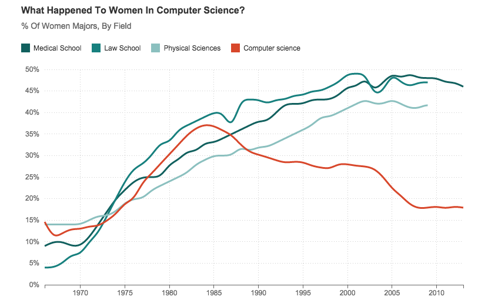

Technology == Change
Russ Feldhausen
Marshall Co. Extension Board
August 12, 2015
My Story
- 12 years in 4-H (Work to Win)
- B.S. Computer Science 2008
- M.S. Computer Science 2017
- 3 years KSRE student helpdesk
- 4 years KSRE helpdesk supervisor & computer support specialist
- 5 semesters in CIS teaching, academic advising & K-12 outreach
What is Extension?
- 1949: The central task of extension is to help rural families help themselves by applying science, whether physical or social, to the daily routines of farming, homemaking, and family and community living.
- 1965: Agricultural extension has been described as a system of out-of-school education for rural people.
- 1966: Extension personnel have the task of bringing scientific knowledge to farm families in the farms and homes. The object of the task is to improve the efficiency of agriculture.
- 1973: Extension is a service or system which assists farm people, through educational procedures, in improving farming methods and techniques, increasing production efficiency and income, bettering their standard of living and lifting social and educational standards.
- 1974: Extension involves the conscious use of communication of information to help people form sound opinions and make good decisions.
- 1982: Agricultural Extension: Assistance to farmers to help them identify and analyze their production problems and become aware of the opportunities for improvement.
- 1988: Extension is a professional communication intervention deployed by an institution to induce change in voluntary behaviors with a presumed public or collective utility.
- 1997: Extension is the organized exchange of information and the deliberate transfer of skills.
- 1999: The essence of agricultural extension is to facilitate interplay and nurture synergies within a total information system involving agricultural research, agricultural education and a vast complex of information-providing businesses.
- 2004: Extension is a series of embedded communicative interventions that are meant, among other goals, to develop and/or induce innovations which help to resolve (usually multi-actor) problematic situations.
- 2006: Extension is the process of enabling change in individuals, communities and industries involved in the primary industry sector and in natural resource management.
Extension == Change
Technology == Change
Invention → Innovation → Diffusion
Computing Science
- The study of computation techniques, not computers themselves
- Logical thinking
- Problem solving
- Tinkerers and hackers needed!
K-12 Outreach
- K - 4: "This is AWESOME! Look at all these fun things I can do"
- 5 - 8: "This is kinda neat. With a bit of effort I can make something fun"
- 9 - 12: "This is math. Math is work. I'm not sure I like this, but okay"
- Adults: "Meh. I don't have time to learn. How can this help me?"
Future of Computing Science
- Job market is growing
- Closing the gender gap
- Closing the income gap
- Problem solving and logical thinking
- Analyzing big data to gain insight
- Soft skills are very important for job seekers - 4-H can help!

What We've Done for KSRE
Senior Projects:
- Aphid Counter Mobile App
- Sorghum Yield Mobile App
- MyFields Mobile App
- Got ideas? Email Me!
What's Changing in Technology
- Windows 10 is here!
- Security is still a problem
- Mobile devices are everywhere
- The IoT is coming...maybe someday
- Social media is still a thing
- Self driving cars & the link to farming
- Managing productivity is important
Windows 10
- Runs on everything! (phones, tablets, Xbox, small devices)
- Universal apps run everywhere
- Free upgrade for 1 year (Win7+)
- Search seamlessly with Cortana
- Read your settings carefully!
It shares everything with the cloud - Verdict: Win7 wait; Win8 upgrade!
Security
- Safe surfing! Always use protection
- Anti-virus software
- Web of Trust - mywot.com
- AdBlock Plus - adblockplus.org
- Disable Javascript - NoScript
- Be careful what you share
- Chip credit cards - Use your PIN!
- Educate others to be vigilant!
Mobile Devices
- A supercomputer from 1995 in your pocket
- Mobile users outnumber PC users
- Use the camera! Wearables!
- Free apps aren't free
- Seamless experiences
- Useful Apps: Radar, GroupMe, TripIt

The Internet of Things (IoT)
- Drones
- FitBit
- Nest thermometers
- Healthcare - MDCF
- Car monitoring devices
- Smart power strips
- Webcams, smartphones, power meters, traffic sensors, etc.
Where are teens on Social Media?
- Nearly half are still on

 is more prestigious according to teens
is more prestigious according to teens reaches more young adults than any TV network
reaches more young adults than any TV network Snapchat has the youngest user base
Snapchat has the youngest user base
Source: Business Insider
Images are trademarks of respective companies
Automatic Elevators

Getting Things Done - 5 Steps
http://gettingthingsdone.com/fivesteps/
- Capture - What has your attention?
- Clarify - What can you do with it?
- Organize - When should it be done?
- Reflect - What should I be doing?
- Engage - DO IT!
Inbox Zero - 5 Actions
http://www.43folders.com/izero
- Delete - THE MOST IMPORTANT!
- Delegate - Let someone else do it
- Respond - Write, send, archive
- Defer - What needs done, but not now
- Do - Make it a habit everyday
Discussion Time!
- Any burning technology questions?
- What drives you crazy about technology?
- Looking to purchase anything soon?
My info
- russfeld AT ksu DOT edu
- http://people.cis.ksu.edu/~russfeld
- 212 Nichols Hall
- (785) 532-7929 (office)
- (785) 292-3121 (google voice)
Social Media in 2015